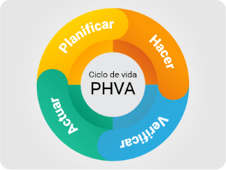

El autocontrol permite identificar oportunidades de mejora, corregir fallas a tiempo y fortalecer la calidad de los procesos y servicios.

Estándares claros y conocidos: El personal debe saber qué se espera de su labor.
Instrumentos de autoevaluación: Listas de chequeo (checklist), indicadores, protocolos.
Capacitación continua: El conocimiento fortalece la capacidad de identificar y corregir fallas.
Retroalimentación efectiva: Basada en resultados, permite reconocer avances y orientar mejoras.
Acciones de mejora: Los hallazgos orientan planes de acción y seguimiento de resultados.
Reemplaza este texto por el contenido de la sección.
Reemplaza este texto por el contenido de la sección.